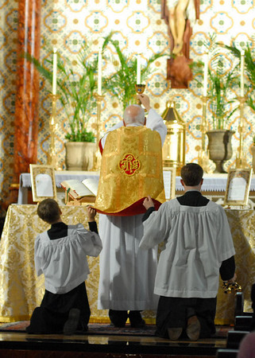

St. Joseph Latin Mass Society
at St. Mary Cathedral, Austin, Texas

Cathedral Rector: The Very Reverend Albert Laforet
Extraordinary Form of the Roman Rite
celebrated every Sunday at 3:30 p.m.
Confessions and Rosary before Mass.
High Mass on the first Sunday of the month.
Benediction of the Blessed Sacrament following Mass on the fourth Sunday of the month.
Please join us in Bishops Hall after Mass for coffee and refreshments.
Location:
Saint Mary Cathedral
203 East 10th St.
Austin, Texas
(512) 476-6182
View map to Saint Mary Cathedral
+ + +
Recent News
Please join us on August 26 to celebrate Fr. Albert Laforet’s birthday.
Following Mass, we will gather in the Bishop’s Hall for a pot luck meal.
Please bring a side dish to share.
+ + +
Please see the Photos of the July 29th Solemn High Mass, taken by Arlen Nydam Photography.
+ + +
The author of In the Heart of Tanzania, Fr. Jozef Musiol, celebrates the Latin Mass in Brenham.
More information: "Book details local priest’s service in Tanzania"
+ + +
Music for the Extraordinary Form of the Mass at St. Mary Cathedral is provided by
+ + +
+ + +
The Mass, Our Treasure (PDF article)
info about the author
This article was translated from the original French by Fr. John Rickert, FSSP.
+ + +
If you would like to be added to our email list just send us an email to the contact link:
Consecration Photo courtesy of James Nino